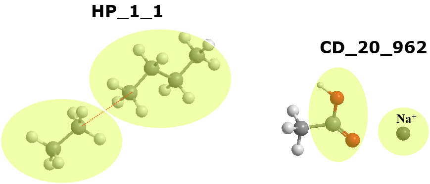

Atomic Interaction Analysis¶
This section describes the unique feature of DL_ANALYSER to carry out atomic interaction analysis. Options to carry out these analysis are located under the Atomic Interaction Analysis Section in the control file.
Note
To use the Analysis Section, the system trajectory files must express atoms in DL_F Notation and it only works for atom-based analysis criteria.
DL_ANALYSER can carry out precise identification and quantification of atomic interactions in a molecular system. Moreover, these interactions can be annotated by using the DL_ANALYSER Notation for Aomic Interactions (DANAI).

DANAI - a universal notation to describe atomic interactions
By following the flavours of the standard DL_F Notation for atom typing in molecular simulations, the DANAI expression provides a universal scheme that can be easily interpreted by modeller, experimentalist as well as computational means. It contains the actual chemical information and precisely annotate a given atomic interaction configuration that can be accessed by means of data analytics.
Note
DL_F Notation is a standard notation for atom typing implemented within DL_FIELD. For more information, please refer to DL_F Notation
In the DANAI notation, the full description of any given interactions must always be expressed in terms of the macro-interactions and the corresponding micro-interactions (or interaction modes).
Macro-interaction
It describes the non-bonded interactions between two Chemical Groups (CG). The general format is shown as:
A_CGI1_CGI2
Where CGI1 and CGI2 are the Chemical Group Indices (CGI) of the interacting CGs. Macro-interactions can be classified into different types, A. Examples below show a few common ones:
DD - dipole-dipole interactions.
HB - hydrogen bond (special case of DD).
ID - induced dipole
HP - hydrophobic interactions between alkyl groups (a special case of ID)
CD - charge-dipole interactions (between ions and polar atoms)
PS - parallel \(\pi\)-\(\pi\) stacking interactions between aromatic rings.
Example below shows two different macro-interactions.
{kind=link}
The one on the left describes hydrophobic interactions between two alkanes, with CGI = 1. The one on the left describes charge-dipole interactions between a sodium cation with a carboxylic acid. Here CGI = 20 refers to the carboxylic CG, while CGI = 962 refers to the cation CG.
Micro-interactions
A set of interaction modes between two CGs. In other words, every macro-interaction contains a set of micro-interactions, that describe a variety of ways how the two CGs interact with each other. The general format is as follows:
[Sa]interaction_notation
where S is the topological structure of interactions, a is the number of CGs involve in the micro-interaction that form such structure. Some examples of S as as follows:
J - a junction or network interaction
R - a ring structure
L - a linear structure
C - complex structure contains some of the above mentioned structures.
For example [L3] means a micro-interaction involves three CGs in a linear fashion.
[R2] means a micro-interaction involves two CGs.
interaction_notation consists of a line of text that annotates the atomic species involved in the interaction. These atomic species are expressed in the DL_F Notation.
Note
DL_ANALYSER detects these interactions according to a set of criteria defined in the control file. For example, to detect a hydrophobic contact, the distance between a pair of central alkyl carbon atoms must be less than a critical distance (say 4.5 Angstrom).